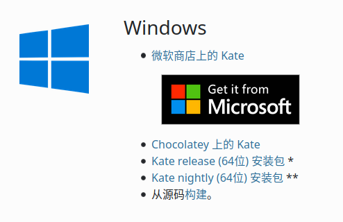

Kate
软件简介¶
Kate 是一个具有众多功能的跨平台文本编辑器。Kate 还附带了多种插件，包括一个嵌入式终端，可以让你直接从 Kate 中启动控制台命令，强大的搜索和替换插件，以及一个预览插件，可以渲染 MD、HTML 甚至 SVG 文件。支持通过交换文件在系统崩溃时恢复数据，带参数提示的自动补全，同时支持 LSP (Language Server Protocol) 以获得更为强大的补全。
下载与安装¶
可打开 Kate 官网，然后进入 获取页面。随后，根据你使用的系统和喜欢的安装方式进行安装。接下来以 Windows 为例讲解安装。

如图，从上到下依次为从 MS Store 安装，通过 Chocolatey 安装，下载 Kate 正式版安装包，下载 Kate 每夜构建版安装包和下载源码手动构建。从 MS Store 安装只需点击链接然后点击安装即可；通过 Chocolatey 安装则需要打开命令行输入 choco install kate；接下来两个则需首先点击链接，然后你将看到如下界面：

其中形如 kate-21.04.0-1-1272-windows-msvc2019_64-cl-sideload.appx 格式的是供手动安装的商店版本，kate-21.04.0-1-1272-windows-msvc2019_64-cl.exe 格式的则是安装包，下载双击即可。
用法与功能¶
交换文件防止数据丢失¶
与 Vim 类似，Kate 会将未保存的更改写入一个交换文件（一般是原文件名前面加点后面加 .kate-swp），如果遭遇断电或程序崩溃等意外，下次启动时不会丢失未保存的更改。
代码高亮¶
Kate 支持三百余种语言的语法高亮。一般来说，Kate 可以自动地选择对应的语言进行语法高亮，不过偶尔也有错误的时候，这时候可以点击最右下角的按钮，选择正确的语言。
自己编写语法高亮文件¶
尽管 Kate 支持超过三百种语言的语法高亮，但是仍不免有语言未被覆盖到，此时可以自己动手编写语法高亮文件。 Kate 自身自带的文件位于 Syntax Highlighting Powered By KSyntaxHighlighting Framework，语法可参照 Working with Syntax Highlighting，编写好的文件根据 Syntax definition files 放置。CoelacanthusHex/dotfiles@80a913c/pam_env.xml 有我编写的一个配置文件可供参考。
切换语言¶
点击上方工具栏里的 设置/Setting，然后点击 配置语言/Configure Language，随后选择语言即可，注意可以选择备选语言。
编码与行尾符¶
Kate 可以自动识别当前文件使用的是什么编码，如果识别错误，可以点击右下角倒数第二个按钮，选择正确的编码。
同时，Kate 也可以自动识别当前文件使用的行尾符，如果识别错误，可以点击 工具→行尾/Tool→End of line 选择正确的行尾符。
查找与替换¶
依次单击 编辑→查找（快捷键Ctrl+F）即可打开“查找”页面。依次单击 编辑→替换（快捷键Ctrl+R）即可打开“查找与替换”页面。同时，点击左下角 搜索与替换 也可打开“查找与替换”页面。
具体操作和其他编辑器并无太大差别，但是支持一些额外的特性，例如：
- 是否区分大小写
- 支持正则表达式（包括捕获组）
- 从当前文件到多文件再到当前工程不等的范围
- 对查找的结果进行选择替换
Language Server Protocol¶
Kate 自 19.12 起支持 LSP Client，最初仅支持 C/C++、D、Fortran、Go、Latex/BibTeX、OCaml、Python、Rust，现如今支持如下表中的语言：
| 语言 | LSP Server |
|---|---|
| Bash | bash-language-server |
| LaTeX | texlab |
| BibTeX | texlab |
| C | clangd |
| C++ | clangd |
| D | serve-d |
| Fortran | fortls |
| Go | gopls |
| Haskell | haskell-language-server-wrapper |
| JavaScript | typescript-language-server |
| OCaml | ocamllsp |
| Perl | Perl-LanguageServer |
| Python | pyls |
| Rust | rls |
| TypeScript | typescript-language-server |
| R | RLanguageServer |
| zig | zls |
要启用 LSP 相关特性，需要前往菜单栏中 设置→配置 Kate 然后选择 插件 中 LSP 客户端 以启用相关特性。当打开对应语言的文件时，Kate 会自动拉起对应的 LSP Server。
增加配置¶
此外，用户还可以手动编写配置，具体格式为：
1 2 3 4 5 6 7 8 9 10 11 12 13 14 15 16 17 18 19 20 21 22 23 24 25 26 27 28 29 30 31 32 33 34 35 | |
其中 server 里的每一项代表一种语言，在这个语言里，command 代表启动 LSP Server 所使用的命令，command 是一个数组，是所需要执行的命令以空格分词的结果；url 是 LSP 的网址；rootIndicationFileNames 是用于确定项目根目录的文件；highlightingModeRegex 则匹配某种语法高亮的名字，以确定使用哪个 LSP；如果存在 use 项，则代表使用 use 项对应的语言的配置。
该配置项位于 设置→配置 Kate→LSP 客户端→用户服务器设置，其中 LSP 客户端 部分要在 插件 中启用 LSP 客户端 插件后才可见。
内置终端¶
注意
内置终端依赖了 KDE 的 Konsole1，而 Konsole 为*nix 独有包。也就是说，Windows 下该特性不可用。
按F4可打开或关闭内置终端，也可点击左下角 终端 按钮打开，内置终端的当前目录会自动与当前文件保持一致，并随着你选择的文件而改变。其余与一般终端并无太大不同。
外部工具¶
点击 工具→外部工具 可执行。
点击 工具→外部工具→配置 可以配置外部工具。
添加外部工具¶
从预置配置中添加¶
进入配置页面后，点击左下角 添加→从默认工具添加，然后点击对应工具即可。
手写配置添加¶
进入配置页面后，点击左下角 添加→添加工具，然后按提示填写即可。可以参照 此文档（英文） 来编写自己的外部工具配置。注意可点击如下标志查看可使用的变量。

常用的外部工具¶
编译并执行单个 C++ 文件¶
在*nix 系统下，打开任意 C++ 源文件，在外部工具里找到 编译执行 cpp，点击即可。
对于 Windows 用户
在默认情况下，由于该工具的可执行文件为 sh，使得该工具在 Windows 下不可用。然而，用户可以对该工具进行修改，使其可用于 Windows 系统。
要进行修改，请先确保你的系统内有一个可用的 C++ 编译器。然后从默认工具添加 编译运行 cpp，将其中 可执行文件 从 sh 改为 powershell，参数改为 -ExecutionPolicy Bypass -Command "g++ %{Document:FilePath} -o %{Document:FileBaseName}.exe;./%{Document:FileBaseName}.exe" 23即可。
Git Blame¶
打开任意文件，在外部工具里找到 git blame，点击之后，会打开一个窗口，展示 git blame 的结果。
格式化¶
格式化功能要求对应包或应用程序可用，例如，C/C++ 的格式化要求 clang-format 可用。对于其他语言，用户可以前往外部工具配置中查看其默认可执行文件作为参考。
打开任意源文件，在外部工具里找到 用 xxx 格式化，点击即可。另外，对于 C/C++ 语言的源文件，clang-format 可格式化选中的文本。
Git Blame¶
要启用该特性，需要前往菜单栏中 设置→配置 Kate 然后选择 插件 中 Git Blame。
启用该特性后，Kate 会在每一行后面以较浅字体显示在 Git 中最后于什么时间被谁修改，将鼠标移动到文字上会出现一个悬浮窗显示 commit 的具体信息。
相关外部链接¶
参考资料与脚注¶
-
Arch Linux 中对该包的描述 中，其可选依赖了
konsole，描述为open a terminal in Kate（在 Kate 中打开一个终端）。 ↩ -
若
g++不在PATH环境变量中，则将其改为编译器的绝对路径 ↩ -
或者，如果使用 Clang，则将
g++改为clang++。 ↩
build本页面最近更新：，更新历史
edit发现错误？想一起完善？ 在 GitHub 上编辑此页！
people本页面贡献者：CoelacanthusHex
copyright本页面的全部内容在 CC BY-SA 4.0 和 SATA 协议之条款下提供，附加条款亦可能应用